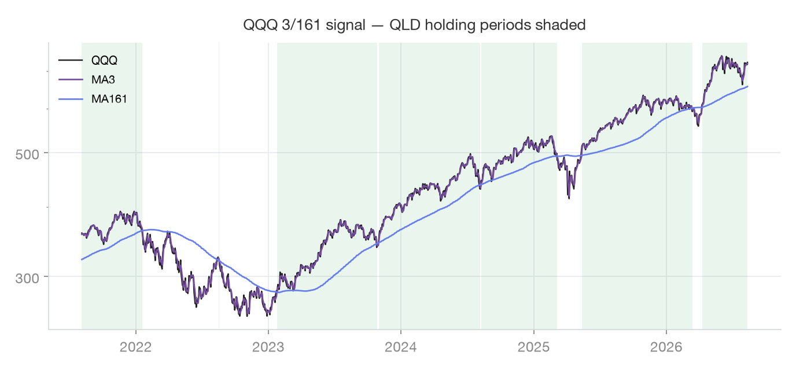
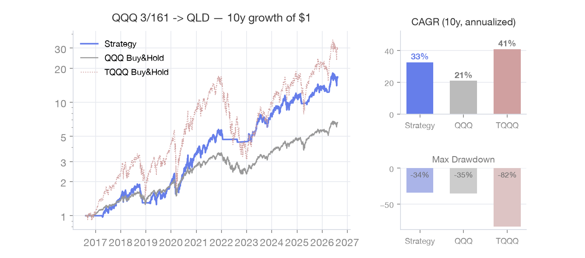

節税向き
QLD ISA (2倍)
同じQQQ 3/161シグナルで2倍レバレッジのQLDを売買 — 優遇口座と相性の良いマイルド版です。
仕組み
シグナルはQQQ 3/161と同一ですが、売買対象を3倍(TQQQ)ではなく2倍(QLD)に下げた構成です。
ボラティリティとMDDが緩やかで心理的負担が少なく、税制優遇口座(原文では韓国のISA)での長期運用に向きます。
最適化シリーズ第5回でも3倍版との併用が推奨されています。
シグナル資産・売買資産
| シグナル(チャート)基準 | QQQ · 3日線 × 161日線 |
|---|
| 実際の売買 | QLD (ナスダック2倍) |
|---|
| 売却後の待機 | SGOV (短期国債) |
|---|
ルール
| シグナル | QQQ 3日線 vs 161日線 |
|---|
| 買い | 3日線が161日線を上抜け → QLDを購入 |
|---|
| 売り | 3日線が161日線を下抜け → QLDを全量売却 |
|---|
| 特徴 | 3倍よりも低いボラティリティ・MDD — 優遇口座の長期運用に好適 |
|---|
実データチャート

直近5年 · 緑の網掛け = 保有期間

直近10年 · $1成長シミュレーション(税・手数料は未反映)
よくある質問
- TQQQではなくQLDを使う理由は?
- 期待リターンは下がりますが、ドローダウンとボラティリティが大きく減ります。特に損失の繰越控除が効かない優遇口座では、深いドローダウンを避けること自体が税引後リターンに有利です。
- ISAでなくても使えますか?
- もちろんです。口座の種類に関係なく「マイルドなレバレッジ」の選択肢として使えます。
- TQQQ戦略と並行してもいいですか?
- はい — 出典のシリーズでも併用が提案されています。非課税・優遇口座はQLD、通常口座はTQQQ 3/161のように口座を分けてリスクを分離する構成が一般的です。
- QQQをそのまま持つのと何が違いますか?
- ガチホと違い下落局面を避けるため、「市場に居る時間」の質が違います。下落を避けつつ2倍レバレッジの複利を取るのが目的で、バックテストではQQQガチホをリターン・MDDともに上回りました。
出典
本ページのバックテストはYahoo Financeの日足(直近10年・調整後終値)でアプリのルールを再現した参考資料です。
税金・手数料・スリッページは反映していません。過去の成績は将来の収益を保証するものではありません。
ルールの記述と実際のシグナルは常にアプリの最新実装が基準です。本コンテンツは投資助言ではなく、
投資判断と責任はご自身にあります。
アプリでこの戦略を有効化 → 設定 · 戦略選択